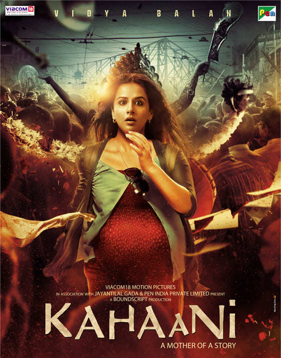

Kahaani is a 2012 Indian Hindi-language thriller film co-written, co-produced and directed by Sujoy Ghosh. It stars Vidya Balan as Vidya Bagchi, a pregnant woman searching for her missing husband in Kolkata during the festival of Durga Puja, assisted by Assist Sub-Inspector Satyoki "Rana" Sinha (Parambrata Chatterjee) and Inspector General A. Khan (Nawazuddin Siddiqui). Made on a shoestring budget of ₹80 million (US$1.0 million), Kahaani was conceived and developed by Ghosh, who co-wrote the film with Advaita Kala. The crew often employed guerrilla-filmmaking techniques on Kolkata's city streets to avoid attracting attention. The film was noted for its deft portrayal of the city and for making use of many local crew and cast members. Kahaani explores themes of feminism and motherhood in male-dominated Indian society. The film also makes several allusions to Satyajit Ray's films such as Charulata (1964), Aranyer Din Ratri (1970) and Joi Baba Felunath (1979). The film's musical score and soundtrack is composed by Clinton Cerejo and Vishal–Shekhar respectively, with cinematography being handled by Setu and editing done by Namrata Rao
